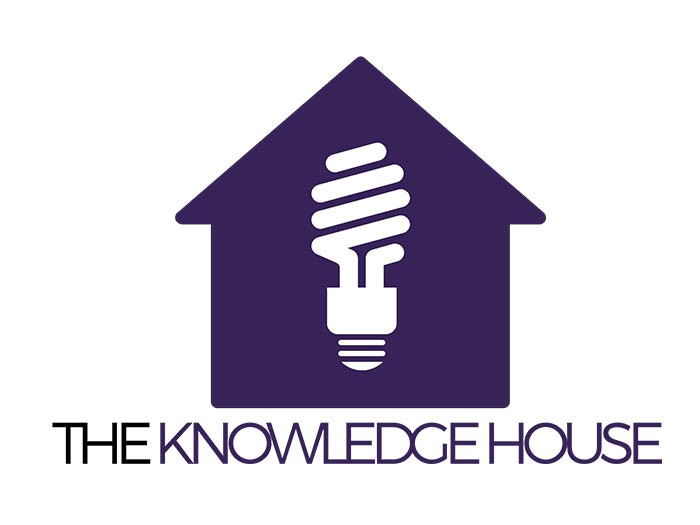

Data Science
My data science journey began with The Knowledge House's immersive 400+ hour project-based curriculum, sparking my passion for extracting insights from data. I honed skills in Python, statistical analysis, data visualization, and handling large datasets. Developing proficiency in SQL, Tableau, NumPy, pandas, and scikit-learn, I applied advanced techniques like regression, clustering, ANOVA, time series analyses, and both unsupervised and supervised machine learning algorithms. During the program, I worked on over 10 projects that increased my skills in data science and helped me become a rising data scientist professional.
I am well-equipped to tackle complex data challenges, extract valuable insights, and drive impactful data-driven strategies.